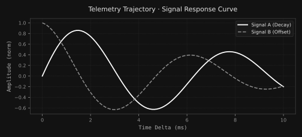

Pure Grayscale Component Library
A production-ready design system implementation based directly on $WIKI/gui/design-system/.
Built with strict pure grayscale neutrals (zero chromatic tinting, R===G===B) and high typographic rigor.
Core Principles
- Content-First Minimalism: Chrome and decorative framing are reduced to purposeful spatial lines and pure value hierarchy.
- Strict Value Contrast: High-density UI requiring clarity across deep dark surfaces (
#000000page canvas to#ffffffaccents). - Publication Paper Surfaces: Scientific chart surfaces supporting theme-invariant high contrast paper renders.
Design Tokens & Swatches
The canonical scale spans 13 pure grayscale steps from #000000 to #ffffff.
Token Mapping Definitions
--color-surface-page: var(--gray-0); /* #000000 */
--color-surface-card: var(--gray-10); /* #121212 */
--color-surface-hover: var(--gray-15); /* #1a1a1a */
--color-border-subtle: var(--gray-20); /* #242424 */
--color-border-default: var(--gray-25); /* #303030 */
--color-text-primary: var(--gray-90); /* #e5e5e5 */
--color-text-secondary: var(--gray-70); /* #aaaaaa */
--color-text-muted: var(--gray-50); /* #737373 */Typographic Scale
Hierarchical type pairing using clean sans-serif for UI labels and mono for operational telemetry.
Buttons & Actions
Stateful interactive button components using high-contrast monochromatic inversions.
Button Variants
Badges & Status Indicators
Non-chromatic badges expressing status and category taxonomy through gray-value differentiation.
Badge Styles
Callouts & Alerts
Structural callout banners differentiated by border stroke density and tone rather than chromatic alert fills.
var(--gray-15) background fill and var(--gray-80) stroke.
Matplotlib Chart Wrapper
Wrapper component (.viz-frame) for embedding scientific plots, telemetry curves, and analytical outputs rendered from Python / Matplotlib.

Publication Theme ("Paper" Variant)
Theme-invariant white paper background (--color-chart-paper) for formal publication reports and export to light print mediums:
Rendered Mermaid Diagrams
Container component (.mermaid-frame) styled with pure neutral variables for directed graphs, flowcharts, and sequence pipelines.
graph LR
REQ["User Turn Request"] --> DOOR["Choice-Laya Door"]
DOOR -->|P_pass >= 0.75| S1["System-1 Edge Slot"]
DOOR -->|P_pass < 0.75| S2["System-2 35B Body"]
S1 --> HOOK["Zero-Discovery Hook"]
S2 --> HOOK
HOOK --> COMP["Completion Stream"]
Code Implementation Pattern
<div class="mermaid-frame">
<div class="viz-header">...</div>
<div class="mermaid-content">
<pre class="mermaid">
graph TD
A[Stage 1: Specify] --> B[Stage 2: Analyze]
B --> C[Stage 3: Design]
</pre>
</div>
</div>ASCII & Box-Drawing Architecture
Fixed-width container component (.ascii-frame) preserving monospace alignment, boundary frames, and terminal telemetry layouts.
┌──────────────────────────────────────────────┐ ┌──────────────────────────────────────────┐
│ PRIMARY HOST (ROG Ally Z1 Extreme) │ │ SATELLITE PEER (Mac Mini M4) │
│ VRAM: 8188 MiB · Single Tenant │ │ RAM: 16 GiB Unified Memory Pool │
├──────────────────────────────────────────────┤ ├──────────────────────────────────────────┤
│ [SLOT 1] System-2 Body (35B-A3B Q4_K_M) │ LAN │ [SLOT 1] Decision Door (Choice-Laya) │
│ Allocation: ~7500 MiB VRAM │ ◄──────► │ Latency: 20-38 ms · 0 MiB VRAM │
│ [SLOT 2] Hot-Swap Manager (llama-swap) │ TCP │ [SLOT 2] Embedding Store (bge-large) │
│ Lease Budget: 4.4 - 6.3 GiB │ │ Latency: 33.8-54.8 ms │
│ [SLOT 3] Free Headroom: 208 MiB (2.4%) │ │ [SLOT 3] Fast Generator (LFM2.5-2.6B) │
└──────────────────────────────────────────────┘ └──────────────────────────────────────────┘
│ │
▼ ▼
┌─────────────────────────────────┐ ┌─────────────────────────────────┐
│ Fast-Path Execution (On-Card) │ │ Offloaded Tail Fallback │
└─────────────────────────────────┘ └─────────────────────────────────┘
Cards & Container Surfaces
Spatial containers utilizing subtle boundary lines and background luminance steps to organize content.
Data Tables & Telemetry Lists
Information-dense tables with subtle hover feedback and clean tabular numeric alignment.
| Component | Category | DOM Selector | Status |
|---|---|---|---|
| Sidebar Navigation | Shell | .sidebar |
READY |
| Matplotlib Frame | Visualisation | .viz-frame |
READY |
| Mermaid Diagram Frame | Visualisation | .mermaid-frame |
READY |
| ASCII Box Frame | Visualisation | .ascii-frame |
READY |
Inputs & Form Controls
Accessible input fields with crisp focus rings and pure neutral styling.